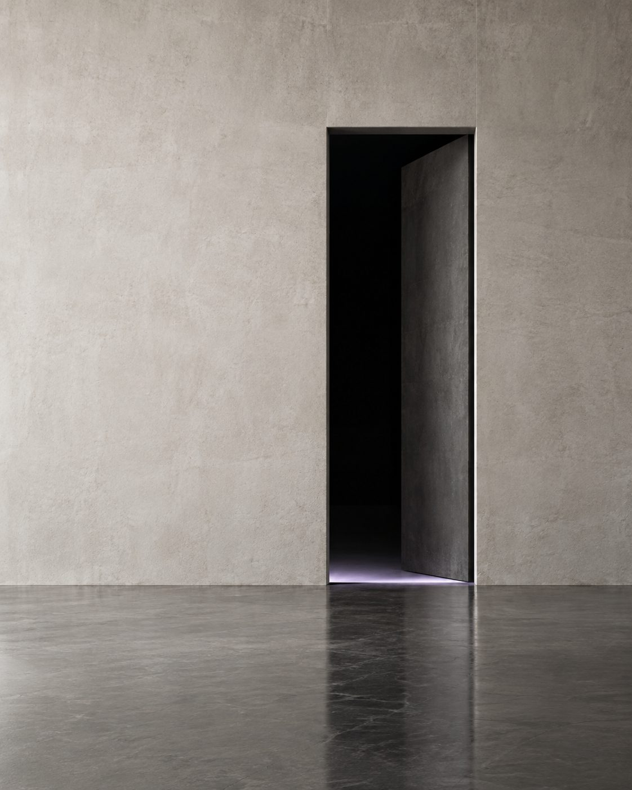

About · LIMEN
A threshold between dream and reality.
일상의 선택이 외부의 정보, 타인의 판단, 사회적 흐름에
어떤 영향을 받는지 탐구하는 몰입형 인터랙티브 미디어아트.
01 / Where it begins
우리는 무엇을 보고
선택하고 있을까요?
처음 가 보는 동네에서 음식점을 찾을 땐 별점과 리뷰를 확인하고, 물건을 살 땐 추천 순위와 다른 사람의 평가를 참고합니다. 불확실함을 줄여 주는 고마운 기준이지만, 그 기준이 내 판단에 얼마나 스며드는지는 잘 의식하지 못합니다.
처음엔 내 취향대로 고르려 했는데, 다른 사람의 평가를 거듭 마주하며 마음이 달라지기도 합니다. LIMEN은 이런 일상의 장면에서 출발합니다.
“내가 지금 이 선택을 하는 이유를
나는 얼마나 알고 있을까?”
02 / The signals around us
내가 선택한 걸까,
자연스럽게 따라간 걸까.
중요한 것은 영향을 받았는지가 아니라,
그 영향이 내 선택에 어떻게 작용했는지 알아차리는 것.
03 / Our point of view
선택의 결과보다,
선택이 만들어지는 과정.
출발점은 하이데거의 세인(das Man)입니다. 누가 직접 명령하지 않아도 ‘보통은 이렇게 한다’, ‘다들 이것을 선택한다’는 기준이 자연스럽게 판단에 스며듭니다. 오늘날의 추천 알고리즘과 리뷰, 인기 순위, 유행에서도 비슷한 구조를 발견할 수 있습니다.
LIMEN은 이 영향을 부정하지 않습니다. 영향을 받는 것은 잘못이 아니고, 남들과 다른 선택이 정답도 아닙니다. 같은 선택이라도 어떤 영향을 받아 그곳에 닿았는지 알아차리는 데에 의미가 있습니다.
04 / Keywords
-
Flow
흐름
우리는 주변의 행동과 사회적 환경, 외부의 신호에 영향을 받는 흐름 속에 존재합니다.
-
Awareness
자각
나의 행동이 외부의 영향을 받으며, 동시에 주변에도 영향을 미친다는 관계를 알아차립니다.
-
Choice
선택
그 관계를 인식한 상태에서, 자신의 선택을 다시 바라봅니다.
세 단어는 차례로 지나가는 단계가 아니라, 작품 전체를 관통하는 개념입니다.
05 / Why a lucid dream
꿈속에서,
꿈임을 알아차리는 일.
자각몽은 꿈을 꾸는 도중 자신이 꿈속에 있다는 사실을 아는 상태입니다. 꿈속 사건을 자연스럽게 받아들이듯, 우리는 현실에서도 주변의 정보와 익숙한 기준을 따라 움직입니다.
무엇의 영향을 받고 있는지 알아차리는 순간, 같은 상황이 다른 관점으로 보이기 시작합니다.

Awareness is not control
자각은 통제가 아닙니다.
관객은 공간에 영향을 주지만, 공간도 자기만의 흐름과 반응을 가집니다. 영향을 받는 동시에 주는 존재라는 관계를 알아차리는 것 — 그것이 LIMEN이 말하는 자각입니다.
커서를 움직여 보세요 · 가까운 흐름은 반응하지만, 전체 흐름은 스스로 움직입니다 (웹 개념 시연)
06 / The name
/ˈliːmen/ · 리멘 · 경계, 문턱
꿈과 현실의 경계이자, 나의 행동과 선택에 작용하는 영향을 알아차리는 인식의 문턱. 환경에서 완전히 벗어나는 경험이 아니라, 그 안에 머문 채 자신의 상태를 새로운 관점으로 알아차리는 경험입니다.
Team SNOOZE · 깨어남을 잠시 유예하다
알람이 울릴 때 깨어남을 잠시 미루고 꿈속에 더 머물게 하는 ‘다시 알림’에서 온 이름입니다. 현실로의 깨어남을 잠시 유예하고 꿈속에 남아, 관객이 자신의 선택을 되돌아볼 수 있는 자각몽의 세계를 만듭니다.
07 / Journey
전시 전에 만나고,
전시장에서 겪고, 관람 후에 돌아봅니다.
-
관람 전 지금 여기
사전 웹사이트
작품의 분위기를 먼저 만나고, 전시장으로 향하는 길.
-
전시장
LUCID DREAM
네 면의 몰입 영상과 움직임 인터랙션 속에서 외부의 영향과 나의 반응을 겪습니다.
-
관람 후
AWAKE
본 장면의 의미를 다시 살피고, 내가 내린 선택을 돌아봅니다. 관람을 마친 뒤 전시장에서 만납니다.
관람 중 센서가 읽은 개인의 이동 기록은 저장하거나 보여주지 않습니다.
08 / Scenes
하나의 흐름으로
이어지는 장면들.
장면의 자세한 의미는 관람을 마친 뒤 AWAKE에서 이어집니다. 여기서는 이름과 결만 먼저 건넵니다.
움직임에 반응하는 장면 · 네 면영상 장면 장면 예고 보기 ↗
Take this question with you
내가 고른 방향은
정말 나만의 선택일까?
답을 정해 두지 않은 채, 공간 안에서 자신의 선택을 마주해 보세요.